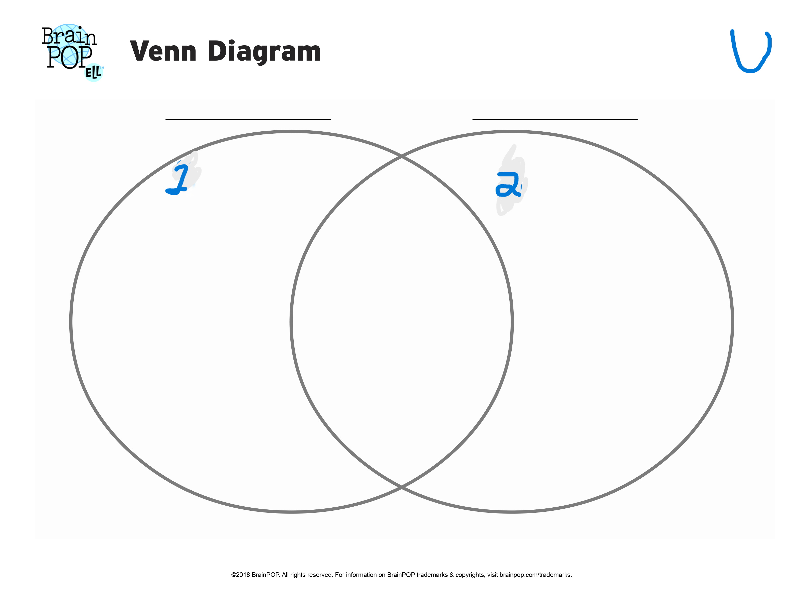

This site contains the extra activity that you can complete after finishing your practices to further your learning.
Instructions: Click the button below to randomize the criteria for sets one, two, and your random number, and based on what you learned in today's lesson, tell the computer which sets it fits into, hit submit, then it will automatically grade your work with my code, and give you feedback.
Note: "U" Stands for the universal set. In set theory, a universal set is a set which contains all objects, including itself. (Wikipedia, 2025)
Random number:
Set One Criteria:
Set Two Criteria:

NUMBER CORRECT (out of 5)
Generic Feedback (Not tied to your answers, just here to help):
Make sure to check the criteria for Set One and Set Two carefully.
Remember that the intersection is where both sets overlap.
The union includes all elements from both sets.
Check if the number is in the universal set.
Use the Venn diagram as a visual aid to understand the sets.